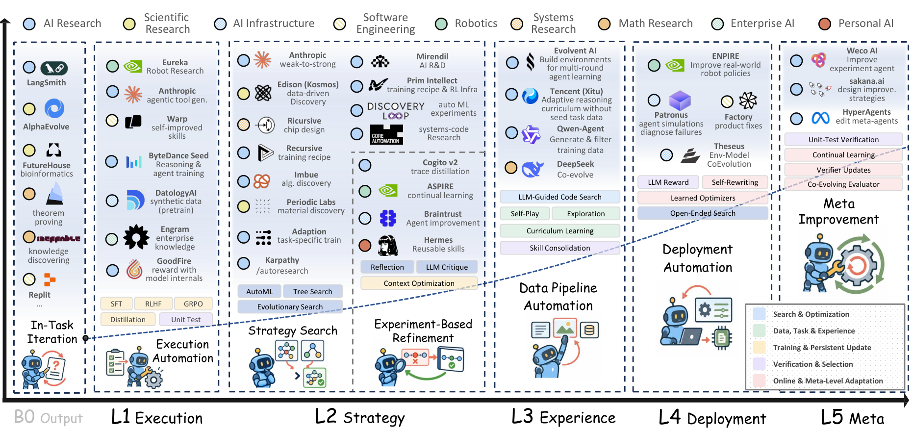
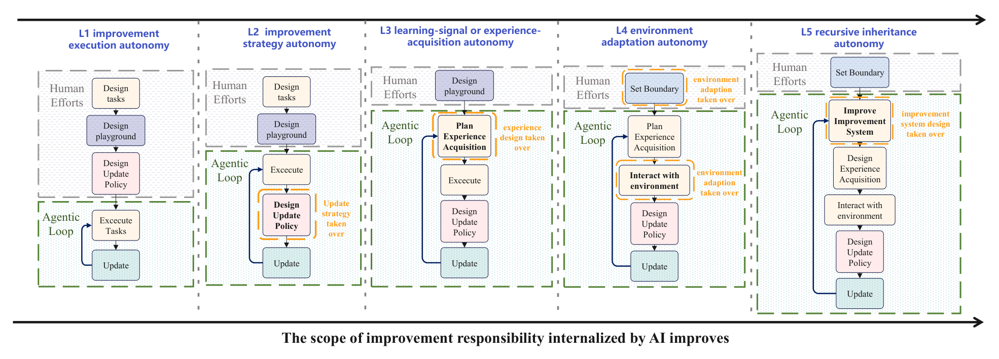

The Last AI Built by Humans: Toward Genuine Recursive Self-Improvement
Paper: arXiv 2609.11873, "The Last AI Built by Humans: Toward Genuine Recursive Self-Improvement", by Yi Duan, Ying Liu, Zirui Tang, et al. (33 authors, incl. Kaiyan Zhang, Conghui He, Guoliang Li, Bowen Zhou, Zhiyuan Liu). Position/survey paper. Grounded in the arXiv HTML full text; figures downloaded from the arXiv HTML version.
TL;DR
- This is the survey that gives the RSI corner of this tracker a shared coordinate system: a five-level autonomy ladder — L1 improvement execution, L2 improvement strategy, L3 experience acquisition, L4 deployment/environment adaptation, L5 recursive meta-improvement (revising the improver/verifier/successor-generation machinery itself) — where each level is defined by which improvement decision moves from human to AI control, not by capability.
- It backs the framing with measurement: a Headroom-Closed Index (HCI) normalizing 393 model–benchmark observations (2023–Sep 2026) across ten domains shows sharply uneven progress — advanced math at 86.4 and graduate science at 85.8 versus software engineering at 52.6 and tool agents at 39.9 — arguing that RSI's value concentrates exactly in the long-horizon, interactive domains where human-led iteration is slowest.
- "Genuine RSI" is defined by persistence and compounding: improvements must outlive the episode, feed the next generation, and improve the improvement process itself. Most systems celebrated as RSI today sit at L1–L2 by this taxonomy.
Why this matters
"Recursive self-improvement" is currently applied to everything from a harness that edits its own prompt to Noam Brown's "top priority by a wide margin" statements about frontier-lab strategy. When one term covers FineWeb-Edu-style data labeling and a system that rewrites its own verifier, arguments about safety, timelines, and research bets talk past each other. The ladder here is the most usable disaggregation I've seen because it carves at decision ownership: what the AI changes vs which improvement decisions it controls. It also gives this tracker a scoring rubric — Darwin Gödel Machine mutates its own variation machinery (L5-flavored, with human-fixed evaluation), Meta-Harness and recursive harness self-improvement are L2, SIMA-2-style self-curricula are L3, and the new RSIAgent entry (this list) — frozen weights, self-chosen exploration tasks, verified memory writes — is a clean L3-with-L4-elements build. The paper's own examples anchor the levels the same way: FineWeb-Edu (L1), Self-Harness (L2), SIMA 2 (L3), PANDO (L4), A-Evolve-Training (L5).

Figure 1 from the paper: autonomy expands from executing prescribed improvements (L1) to revising the mechanisms that generate future improvements (L5), with representative systems mapped onto each level.The core idea
Two ideas, one conceptual and one empirical.
The ladder. Every self-improvement loop decomposes into decisions: what to improve, how to improve it, what experience to learn from, when to update deployed state, and what machinery generates the next round of improvements. Levels are defined by the highest decision the AI owns:
- B0 / in-task improvement: gains that don't persist past the episode (in-context adaptation) — explicitly below the RSI threshold.
- L1 — execution autonomy: humans fix objective, method, and success criteria; AI executes the update at scale.
- L2 — strategy autonomy: objective and evaluation stay human-fixed; AI diagnoses weaknesses and chooses interventions (harness edits, data recipes).
- L3 — experience autonomy: AI also decides what practice/data it needs next, generating tasks targeted at its own observed weaknesses.
- L4 — environment-adaptation autonomy: the loop runs in deployment, revising persistent state (rules, memory, skills) under external acceptance/governance gates.
- L5 — recursive inheritance autonomy: AI persistently revises a mechanism that governs subsequent improvement — the improver, the verifier, or the successor-generation procedure. Only here does the "recursion" in RSI become literal: the improvement process is itself the object of improvement.
The measurement. To argue where RSI matters, the paper builds cross-domain capability trajectories. Scores from multiple sources are pooled by a weighted consensus (benchmark-owner tables weighted 3, independent common-harness evals 2.5, combined reports 2, model-author tables 1, first-party values further ×0.75):
then normalized by the Headroom-Closed Index, where \(F_{b,0}\) is the 90th-percentile model score in the benchmark's entry year (0 = entry-year frontier, 100 = perfect):
and aggregated into domain trajectories with square-root model-count weights so well-covered benchmark families count more without dominating:
How it works
The body of the survey walks the ladder level by level — for each: where the loop closes, what persists between rounds, which decisions remain human, and the implementation techniques (with representative-system tables). Figure 2 is the load-bearing visual: the same loop diagram five times, with the green "AI-controlled" frame swallowing one more component at each level.

Figure 2 from the paper: gray dashed frames are human-controlled components, green frames sit inside the RSI loop, orange outlines mark the component newly internalized at each level.Algorithm: the generalized RSI loop, parameterized by autonomy level
(reconstruction from Figure 2's loop patterns — the paper presents
these as diagrams, not pseudocode)
Given: system S, persistent state M (weights / harness / memory / skills),
improver I, verifier V, objective O
loop over improvement rounds:
w ← diagnose_weaknesses(S, M) # L2+: AI-owned; L1: human-owned
x ← acquire_experience(w) # L3+: AI generates its own tasks/data
u ← I(S, M, x) # candidate update (all levels: AI executes)
ok ← V(u, O) # human-fixed until L5
if ok: M ← commit(M, u) # L4: commits happen in deployment,
# under external acceptance rules
if level == L5:
I, V ← revise_improvement_machinery(I, V, outcomes)
# the revised improver/verifier persists into the next round --
# this inheritance is what makes the recursion genuine
Around the ladder, the paper adds three supporting studies: the HCI measurement layer (Section 2); an applications tour — science, embodied intelligence, software engineering, healthcare — arguing each domain climbs the ladder at different speeds because verification and experience costs differ; and an industrial-evidence section synthesizing what labs (DeepSeek's automated environment construction among them) have disclosed about closing parts of the loop in production pipelines.
Results
For a position paper, the HCI analysis carries the empirical weight:
- Progress is uneven in level and shape. By 2026: advanced mathematics 86.4, graduate science 85.8, broad knowledge 77.2 — versus legal reasoning 64.5, multimodal reasoning 62.2, frontier academic breadth 60.4. Math's annual increment grew from 32.8 to 53.6 points, while multimodal gained 59.7 in 2025 and only 2.5 in 2026. A single aggregate benchmark would hide all of this.
- Interactive capabilities lag most. Software engineering 52.6, search/terminal agents 56.8, tool agents 39.9 (lowest, despite jumping from 8.2 in one year) — 33–46 points of normalized headroom behind graduate science. Bounded benchmarks exercise L1–L2 capability; long, stateful workflows expose the L3–L4 verification/memory/adaptation machinery that barely exists yet.
- The RSI upside is illustrated, not measured. The hatched post-2026 region of Figure 3 applies an explicitly illustrative endpoint,
i.e. closing 78% of each domain's remaining headroom — moving software engineering 52.6 → 89.6 and tool agents 39.9 → 86.8. The hypothesis: RSI's experience generation, validation, and update retention preferentially attack exactly the domains where human-led iteration (environment construction, trajectory collection, failure diagnosis, regression testing) is the bottleneck.
How it connects
- Darwin Gödel Machine / Mendel / Red Queen: the Gödel-machine lineage is the L5 aspiration made concrete — and the ladder clarifies that editing your own variation machinery while humans hold the verifier is L5-on-one-axis only.
- Meta-Harness, Ecdysis, DarwinX: today's harness-evolution wave is L2 by this taxonomy — human-fixed benchmarks and promotion rules, AI-chosen interventions. The survey cites Self-Harness as its canonical L2 example.
- RSI limits from 1,338 runs and AIDE-2's RSI evidence: the empirical skeptic literature — worth reading against the illustrative 78%-headroom-closure extension here.
- RSIAgent and Dream-RSI (this list, added the same week): frozen-weight L3 systems where the persistent substrate is memory rather than weights or code — the ladder predicts exactly this design as the near-term frontier, since L3 needs verification but not deployment governance.
- Living-Harness and the Microsoft verify-then-write memory entry (this list): L4's "external acceptance rules for persistent state" is precisely the admission-gate discipline these systems implement.
Critical take
The taxonomy is genuinely useful; the trimmings deserve skepticism. The HCI machinery makes many discretionary choices — source weights of 3/2.5/2/1, the ×0.75 first-party haircut, 90th-percentile entry-year anchoring, √n family weights — which the authors themselves call a "practical sensitivity adjustment"; treat the trajectory shapes as robust and the specific values as soft. The post-2026 extension is the weakest element: \(R_d = 100 - 0.22(100-T_{d,2026})\) has no empirical basis (the 22% residual is chosen for illustration), yet it's the part most likely to be screenshot into "RSI will close 78% of the gap" claims. The industrial-evidence section leans on lab disclosures that are unauditable by construction. And the title overpromises: nothing in the paper argues this generation of methods achieves L5 — the honest reading is a roadmap in which today's systems are L1–L3 and every level transition above L3 is gated on verification and governance problems the survey names but does not solve. That, ironically, is its best contribution to the safety conversation: the binding constraint on genuine RSI is trustworthy verification of self-generated improvements, the same conclusion the skeptic papers reach from the other direction.
If you remember three things
- Grade RSI claims by decision ownership, not capability: L1 executes human improvements, L2 chooses interventions, L3 chooses its own experience, L4 commits persistent state in deployment, L5 revises the improver/verifier itself — and "genuine RSI" requires improvements that persist, compound, and improve the improvement process.
- The headroom map points at agents: normalized frontier closure in 2026 is 86.4 (math) and 85.8 (grad science) vs 52.6 (software engineering) and 39.9 (tool agents) — RSI's economic case lives in long-horizon interactive domains where human-led iteration is the bottleneck.
- The 78%-headroom-closure endpoint is an illustration, not a forecast — cite the ladder and the HCI trajectories from this paper, not the post-2026 curves.